Soil textural triangle

Back to course overview
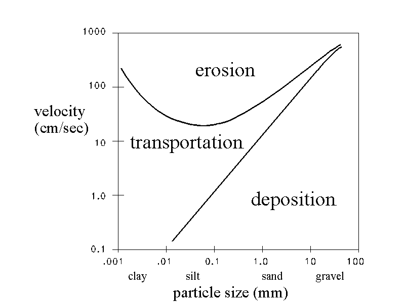


If we assume: laminar flow, spherical particles, homogeneous material, smooth surfaces and particles not interfering with each other.
The force of viscosity on a small sphere moving through a viscous fluid is given by:
\[F_d = 6 \pi \mu r v\] where: \(F_d\) is the frictional force, Stokes’ drag \(\mu\) is the dynamic viscosity \(r\) is the radius of the spherical object \(v\) is the flow velocity relative to the object.
At terminal (or settling) velocity, the excess force \(F_g\) due to the difference between the weight and buoyancy of the sphere is:
\[F_g = \left(\rho _{p}-\rho _{f}\right)\,g\,{\frac {4}{3}}\pi \,R^{3},\]
with \(\rho_p\) and \(\rho_f\) the mass densities of the sphere and fluid
\(R\) the particle diameter
\(g\) is the gravitational acceleration (m/s2)
\(V={\frac {2}{9}}{\frac {\left(\rho _{p}-\rho _{f}\right)}{\mu }}g\,R^{2}\)
\(\rho _{p}\) is the mass density of the particles (kg/m3)
\(\rho _{f}\) is the mass density of the fluid (kg/m3)
\(\mu = 10^{-3} Pa.s\) is the dynamic viscosity.
V > 0 when a particle is falling.
V is proportional to \(R^2\)
Fine sand, 0.1mm: 0.7 cm/s
Silt, 0.02mm: 0.03 cm/s
Clay, 0.005mm: 0.0018 cm/s

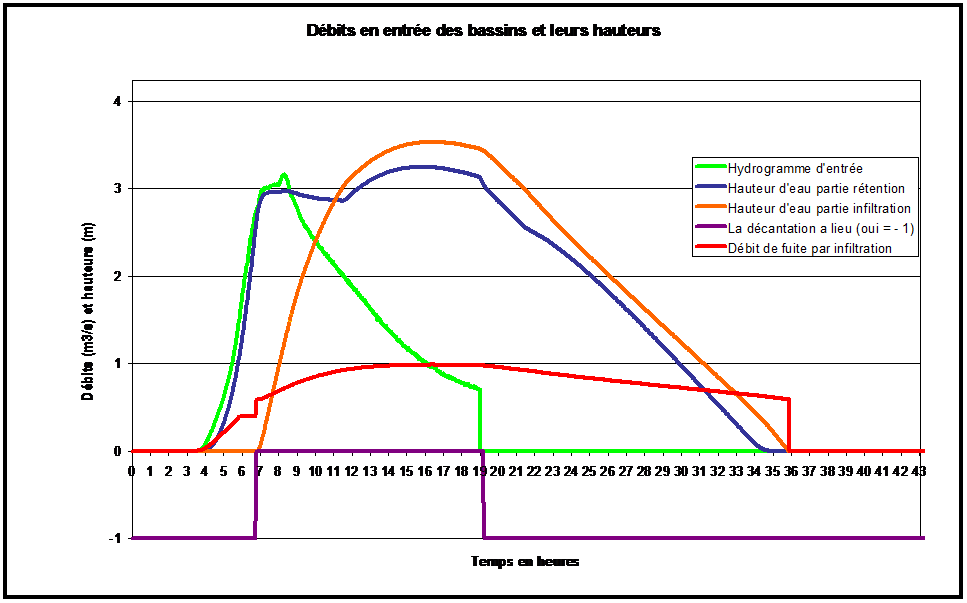
Water flow through soils can lead to (internal) soil erosion if quick enough.
It is a common cause of failure for earth dams and levees (dikes) as it is often detected too late. This is why they need to be regularly monitored.
It is one of the reasons for not planting vegetation on dikes
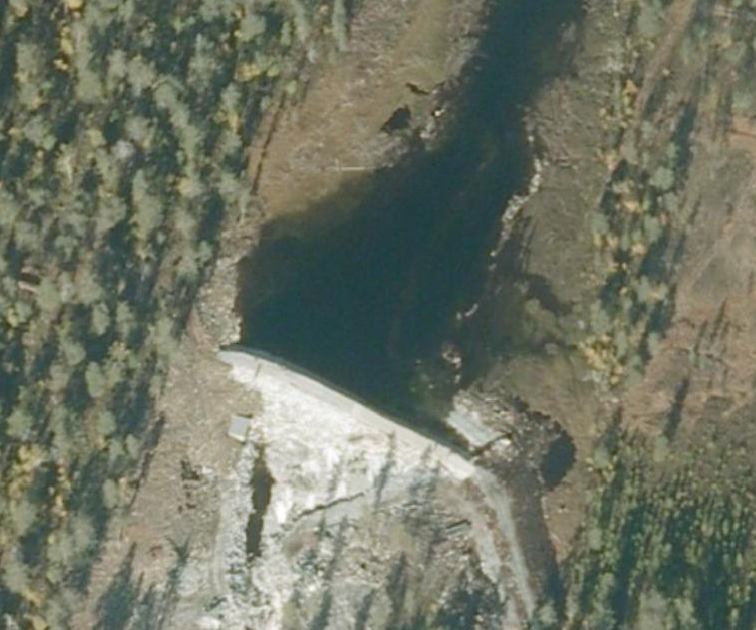
NOTE: Taken as general example: probably no erosion problem but a similar site could
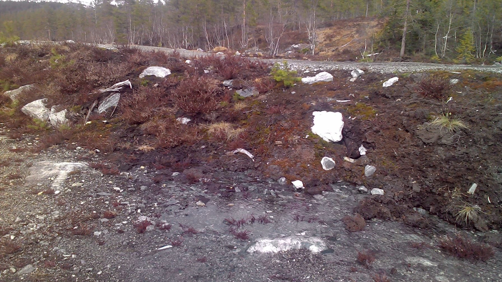
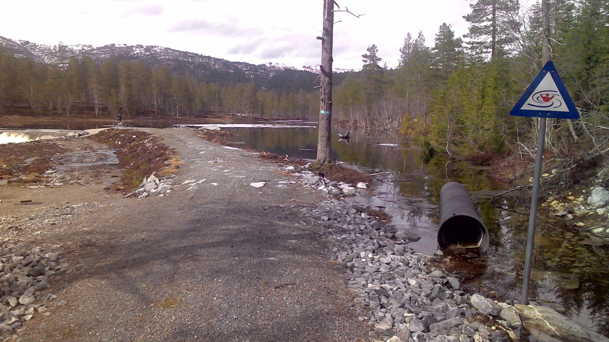
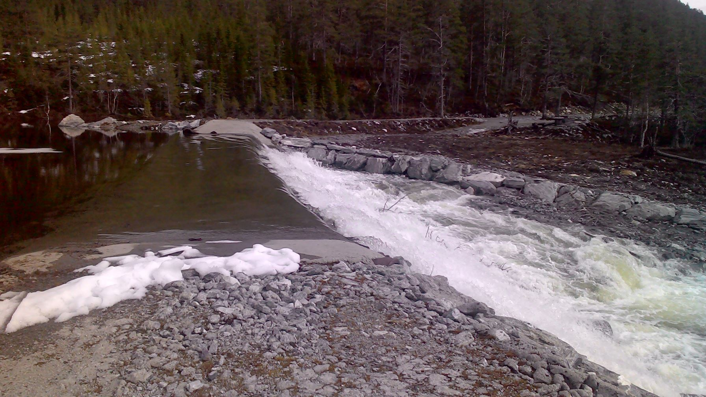
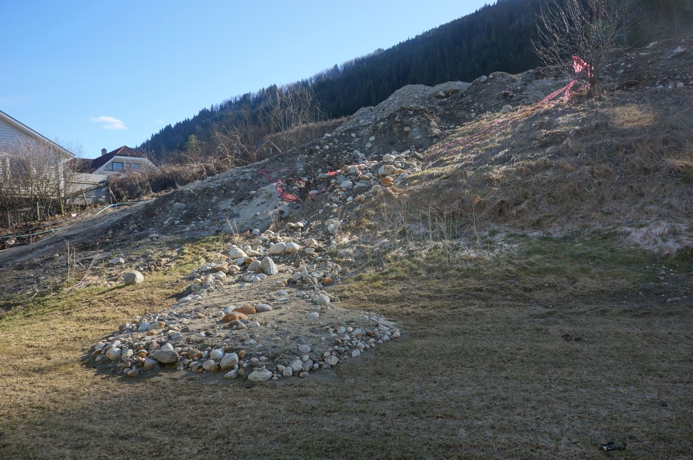
Fixes:
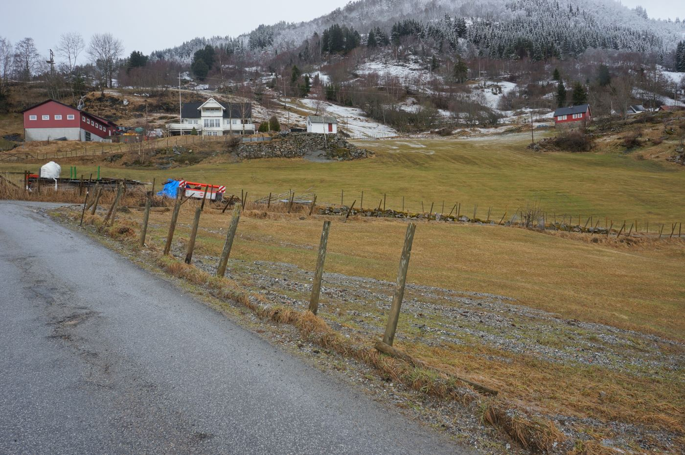
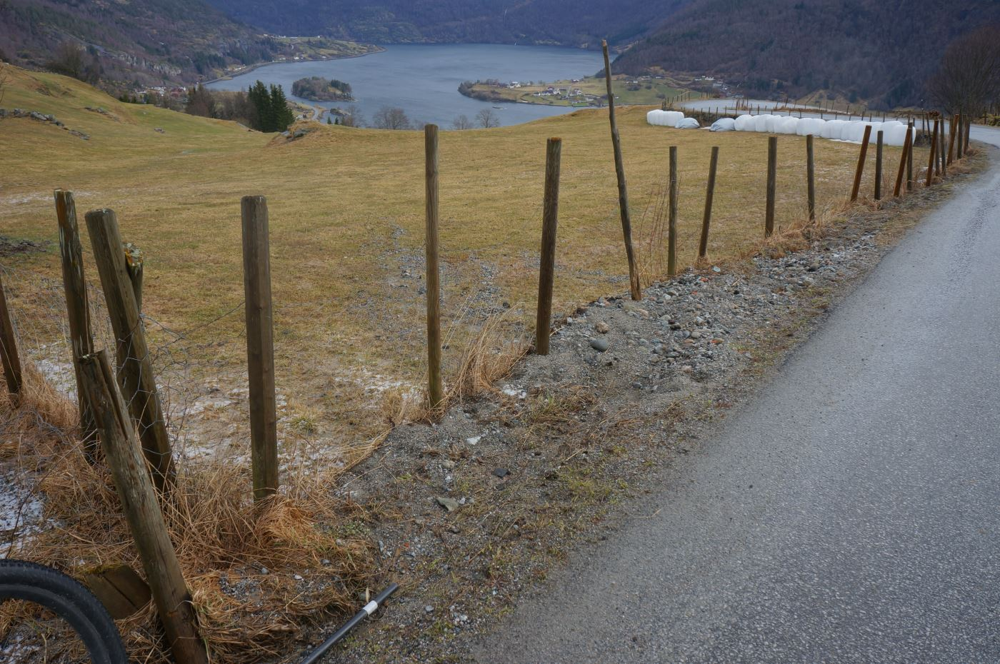
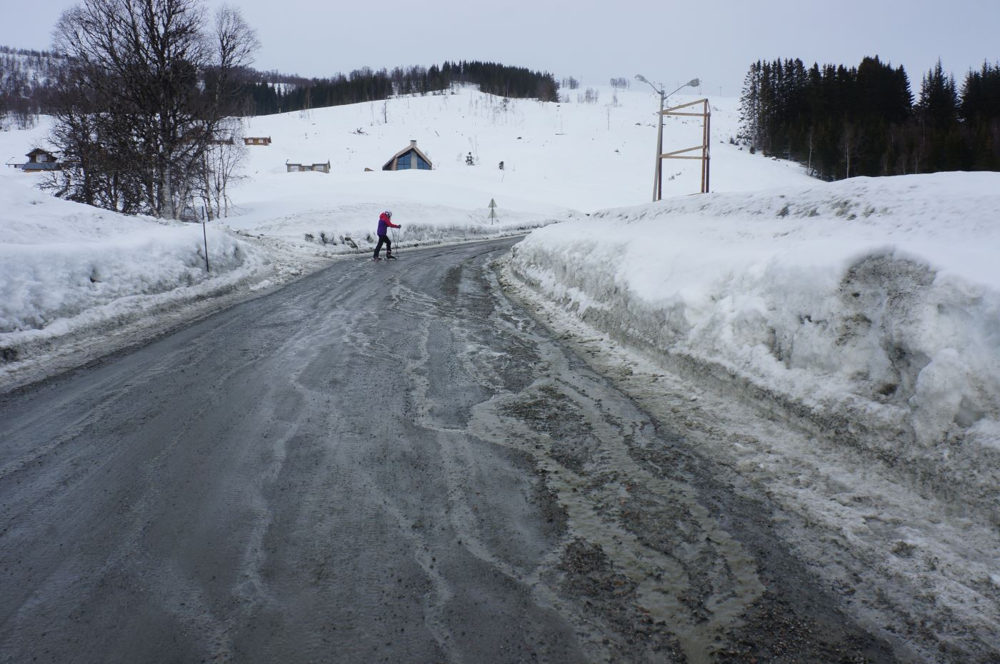
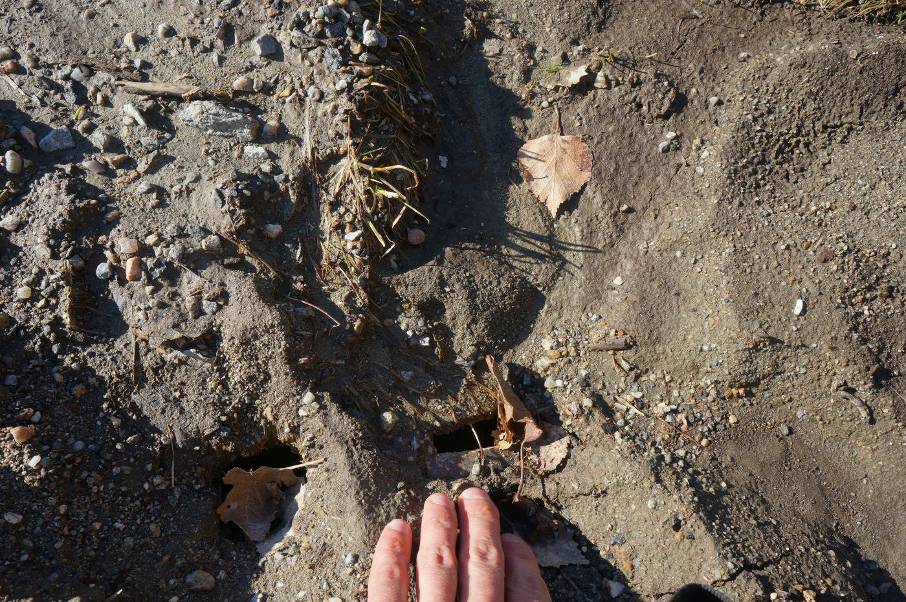
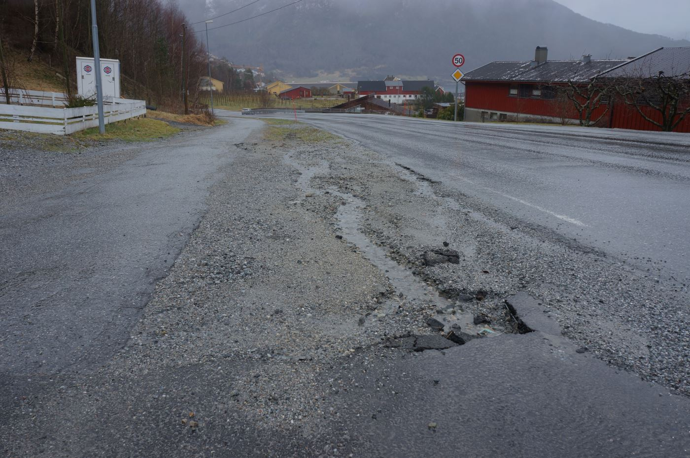
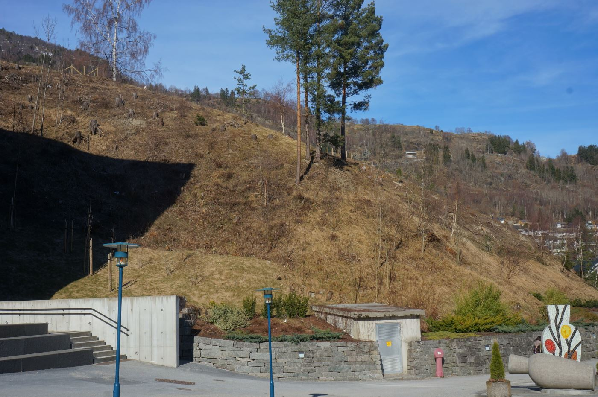
The RECARE project presents 17 case studies in Europe dealing with prevention and mitigation of soil degradation.
One of the case studies is in a Norwegian catchment: preventing soil degradation in the Vansjø-Hobøl catchment
Erosive flood events: theory and protection measures Vegvesen - Flom- og sørpeskred - Sikring av veger og jernbaner
The Global Environment Facility report on “Managing soil organic carbon for global benefits”. This links to the theme “land use”.
Control of water pollution from agriculture - FAO irrigation and drainage paper 55
Erosion control practices and systems
Includes soil management and water management
Cornell University: great online documents on soil conservation from an agricultural perspective
15:00 Compost blankets for erosion control during contruction -> buildingsoils.org
20:00 reasons and effects of changes in erosion 23:00 sand transport velocity. non libear relationship with slope 36:00 definitions of resilience 49:00 EPA conlusions on expected change sin erosion / pollution patterns
Research combining erosion, sediment load and open channel flow (long and difficult)
https://www.youtube.com/watch?v=9_ItEhCrLoQ
Comparing infiltration properties at tilled vs non-tilled land